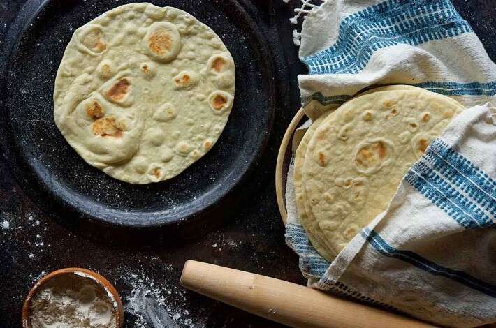

Tortilla

Simple Tortillas (https://www.kingarthurbaking.com/recipes/simple-tortillas-recipe)
Ingredients
- 2 1/2 cups (300g) Unbleached All-Purpose Flour, plus additional as needed
- 1 teaspoon baking powder
- 1/2 teaspoon salt
- 1/4 cup of any one of the following: 4 tablespoons butter, room temperature (57g), shortening (48g), lard (57g), or vegetable oil (50g)
- 7/8 to 1 cup (200g to 227g) water, hot, (about 110°F to 120°F)
Steps
- Whisk together the flour, baking powder, and salt in a mixing bowl.
- Use your fingers to combine the butter/shortening/lard/vegetable oil with the dry ingredients.